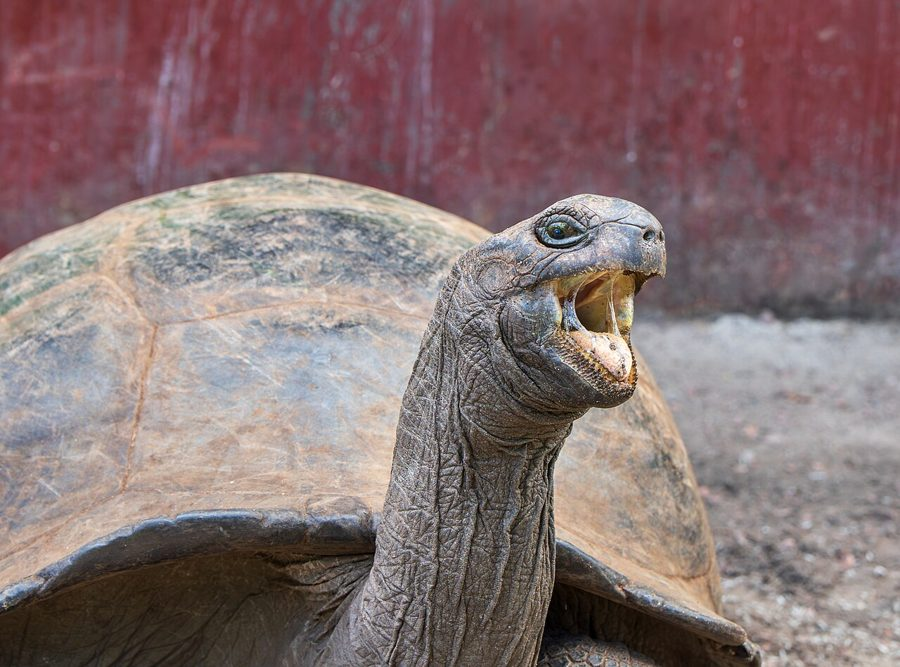

> TURTLE.EXE — longevity protocol
Turtles run a soft-power OS: low clock speed, high uptime. Giant tortoises clear 100 years; Jonathan of St. Helena has been online past 190. The stack is a hard shell, a metabolism that sips energy, and a diet of greens instead of burn-rate hustle. Freshwater turtles last decades; sea turtles cruise 50–80+ years if boats and nets don’t crash the process. Repair-friendly DNA keeps the kernel patching itself — this tortoise still looks ready for another century of packet acknowledgements.
> COUCH_CORNER — null-space recovery
That awkward gap where two couches meet is dead air in the living-room topology. Reclaim it:
- Jungle Tower — tall plant + string lights → mini rainforest node.
- Reading Nook — cushions, lamp, comics → offline hideout.
- Pet Palace — soft bed + toys; cat/dog claims root.
- Art Corner — tiny easel or rotating doodle board.
- Snack Dock — low tray table for popcorn during movie night.
// reference captures


.jpg){kind=link}


> SPIRAL.φ — classical recursion
Our spiral is the golden spiral drawn over Leonardo’s Mona Lisa. Every quarter-turn grows by φ ≈ 1.618 — the same ratio that shows up in shells, galaxies, and bad slide decks about “nature’s algorithm.”

> STATUS — under construction (intentional)
★ best viewed in any terminal ★
This site used to look like GeoCities + MySpace + sticker notebook. Cycle 4 reboots it as retro-tech terminal: monospace, square panels, ASCII noise, green-on-black energy. Stickies still drive the build.
> MOTD — who we are now
╔══════════════════════════════════════════╗ ║ ENTROPY COLLECTIVE · HARVEST NODE ║ ║ media · extinction · media laws · φ ║ ║ leave stickies · we apply the safe ones ║ ╚══════════════════════════════════════════╝
Renamed from the playground kids brand. Same sticky → PR loop. New skin: Share Tech Mono, square frames, no toddler rotations.